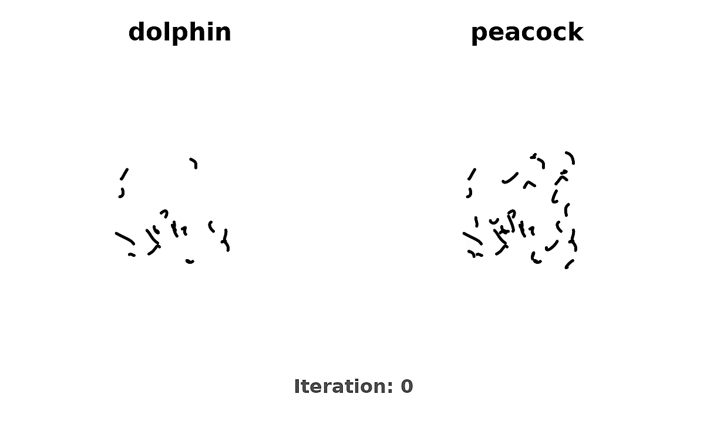

Our method optimizes a set of learnable stroke parameters, which are divided into prefix strokes Sprefix and delta strokes Sdelta. The optimization process involves two parallel branches. In the top branch, only the prefix strokes are rendered by a differentiable rasterizer to create a partial sketch (e.g., a rabbit). This sketch is then guided by a pre-trained, frozen text-to-image diffusion model using a prompt corresponding to the prefix ("a rabbit"), resulting in the prefix SDS loss ℒSDSprefix. In the bottom branch, the full set of strokes is rendered to create the complete sketch (e.g., a horse). This is guided by the same diffusion model using a prompt for the full object ("a horse"), resulting in the full SDS loss ℒSDSfull. The total SDS guidance loss is the sum of these two terms ℒSDS=ℒSDSprefix+ℒSDSfull. Gradients from this total loss are backpropagated to update all learnable stroke parameters.
Optimization Process
Visualizing the optimization process of our method. The strokes are progressively optimized to create semantic illusions.
